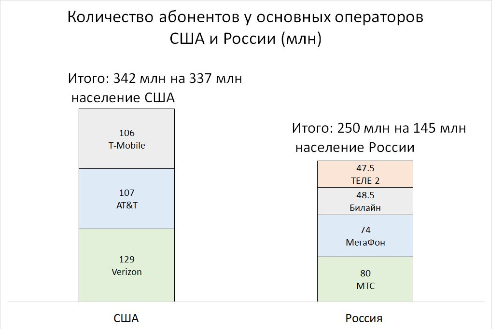
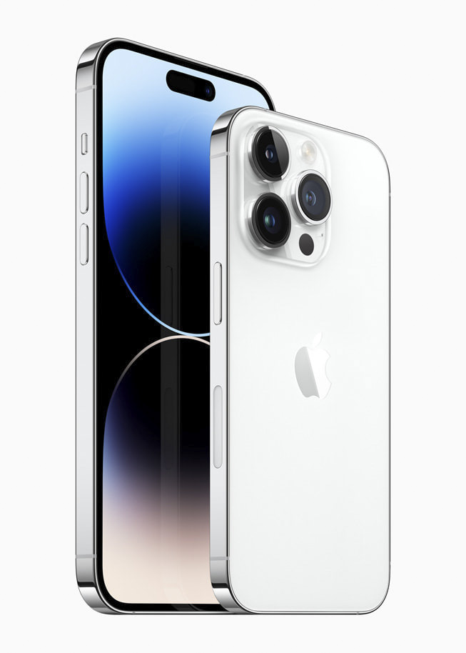
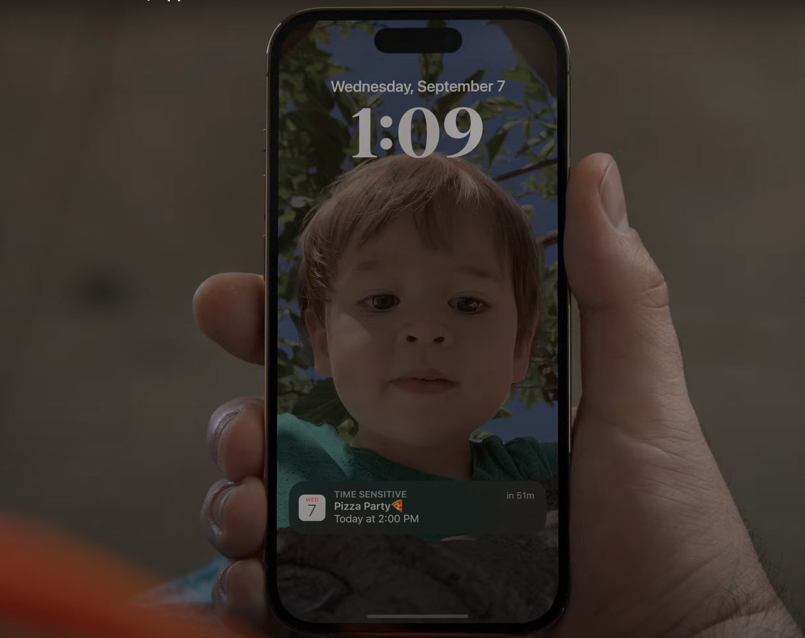
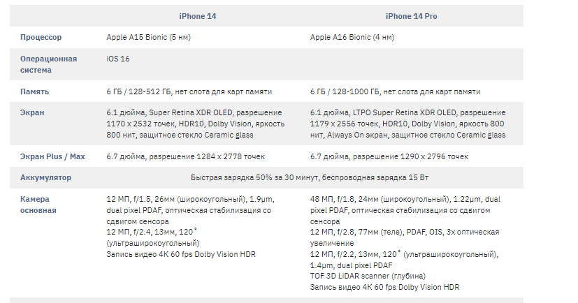

Во-первых, самое главное. Пока что непонятно, можно ли будет привезти незалоченный смартфон из США, активировать в России и подключить к российскому оператору. Но в теории можно, потому что на сайте Apple есть большой список операторов, поддерживающих eSIM. России там по понятным причинам нет, но есть Гуам (а это вообще Микронезия, если оператор из Гуама может, то МТС и подавно справится).
Почему перешли на eSIM?Начнем издалека. Например, долгое время в iPhone не было слота для 2 SIM-карт. Уже в самых дешевых Android-смартфонах функция была, а на iPhone нет.
Почему?Чуть выше я уже написал, что в США операторский рынок, где покупатели заключают многолетние контракты. Мобильная связь в США довольно дорогая. Средний тарифный план в месяц стоит 70-85 долларов. Зарплаты у американцев больше, но 70-85 – это неприятная сумма. Представьте, это как если бы при зарплате в 100 тысяч приходилось каждый месяц платить 2.5-3 тысячи за мобильную связь. Соответственно, у американцев обычно один оператор и один мобильный номер.
К слову, проверить это утверждение довольно легко. Просто возьмем открытую статистику по количеству абонентов у операторов в США и России.

Как видите, в США количество абонентов у основных операторов незначительно превышает население страны. В то время как в России на каждого жителя приходится почти по 2 SIM-карты.
Так и зачем в iPhone делать 2 SIM-карты, если людям это не надо? К слову, так делают и другие операторы. Например, если взять Samsung Galaxy S22 для Южной Кореи, то там будет слот для одной физической SIM-карты. Причина ровно такая же: мобильная связь в Корее ещё дороже, чем в США.
Phone на 2 SIM-карты сделали исключительно для Китая, потому что китайские мобильные операторы не поддерживают технологию eSIM (это я к тому, что в определенный момент в iPhone появилась комбинация SIM + eSIM, так что надо было китайцам тоже дать возможность иметь 2 SIM-карты, чтобы не чувствовали себя обеделенными). Как я понимаю, сами операторы не против, но есть препоны из-за бюрократии в правительстве. Ещё 2-3 года точно будет идти стандартизация, а правительственные комиссии будут инспектировать вопрос.
Итак, подводя итоги, в США у каждого абонента один номер, все операторы поддерживают eSIM. Соответственно, нет никаких преград, чтобы держаться за физические SIM-карты. Операторы ещё и на производстве сэкономят.
Кто-то спросит, а как же роуминг. Здесь тоже всё схвачено. Операторы США предлагают расширенные пакеты, включенные в тариф. Например, у AT&T тариф предлагает не только связь в США, но можно отправиться в Мексику или другие страны Латинской Америки и пользоваться смартфоном как дома. Соответственно, лишь малый процент американцев испытает неудобства от отсутствия физической SIM-карты.

Что бы ни говорили, спутниковая связь – это громадная инновация. Google и Android-производители смартфонов уже работают над тем, чтобы добавить себе подобную функцию.
Сразу скажу, что 99% эта функция не нужна. Однако я бы хотел, чтобы что-то подобное было на моём смартфоне. Отправились гулять по горам Абхазии, уехали на сплав в Карелию, заблудились в лесу в Ярославской области – в таких ситуациях хотелось бы иметь возможность в крайнем случае связаться с МЧС. Очевидно, что лет через 10 у всех смартфонов будет подобная функция. Возможно, её наличие даже станет обязательной по законодательству.
Решение от Apple – это первый шаг. Пока что будет работать только в США и Канаде. Если купили iPhone в другой стороне и приехали в США, то функция тоже будет работать. Первые два года бесплатно, про тарифы ничего не рассказали. Ходят слухи, что Apple их ещё согласовывает и прорабатывает.
Что нужно знать про спутниковую связь:
В iPhone для Китая, Гонконга и Макао спутниковой связи не будет вообще. Ибо таков путь Китая.
Выше 62 параллели работа спутниковой связи не гарантируется. Это примерно всё, что выше Петрозаводска.
Спутниковая связь пробивает облака, мелкую и среднюю листву, но в густой листве, каньонах, вплотную к горе связь не гарантируется.
Пока что спутниковая связь – это больше маркетинговый кейс, который, однако, непременно спасет множество жизней. Американцы регулярно теряются в пустыне Мохаве, на границе с Мексикой, в заповедниках типа Йеллоустон. Например, прямо сейчас порядка 5 человек ищут в различных национальных парках США.
Соответственно, в новостной повестке США функция спутниковой связи упадёт на благодатную почву. Уж точно родители купят такие телефоны своим детям.
Это же относится и к детекции аварий. Ещё одна фишка, которую хотелось бы видеть на своем смартфоне. Да, наверно, любой автомобилист бы подобное захотел. Такие вещи уже есть в большинстве автомобилей, но не во всех. Напомню, к слову, что в США средний возраст автомобиля составляет 13 лет. Так что зайдет на ура. Впрочем, и в России не помешает. Сейчас же не везде уже ставят Эру-ГЛОНАСС, да? Хотя если нет водительской подушки безопасности, то, наверно, и не обязательно.
Always-On экран давно присутствует в смартфонах Android. Однако Apple и тут нашла простор для маневра, который повлияет на весь рынок.
Always-On экран в Android – это горящие часы на выключенном экране. Apple придумала, что будет зажигать весь экран.
То есть создаётся ощущение, что экран действительно всегда включен.

Выглядит подобное решение, безусловно, гораздо интереснее, чем у Android. Есть вопросы про время автономной работы, но Apple говорит, что даже с включенным Always-On экраном новый iPhone будет работать дольше предыдущего поколения.
В Pro-версиях «челку» заменили на «остров». Название, видимо, опять же рассчитано на американцев. Видимо, им привычно. Так, стол с раковиной по центру кухни называют kitchen island (кухонный остров). В любом случае нелепый нейминг.
Однако здесь интересен подход! Apple в очередной раз показала класс. Это не просто вырез, а полноценная рабочая зона, которая позволяет:
Быстро переключаться между приложениями.
Получать уведомления в виде иконок. Так, Apple говорит, что там, например, отобразится, когда такси подъедет и подобные этому вещи.
Открывать виджеты с музыкой, картами и т.д.
Добавлять туда полезные виджеты – например, можно поместить туда таймер, шагомер или какой-то другой счетчик, за которым нужно наблюдать в фоне.
Подобные вещи есть и у Android. Приехало такси – вот push-уведомление, таймер сработал – вот ещё уведомление на весь экран. Решение от Apple более элегантно.
Попутно обратите внимание, что, опять же, уникальная штука. Уж сколько лет с нами вырезы всех мастей. Но Apple в очередной раз умудрилась сделать iPhone уникальным. Спутать Samsung с Huawei, или Honor, или Xiaomi – легко. Не узнать iPhone – невозможно. Только ради этого и стоило сделать «динамический остров».
Apple обычно подсвечивает лишь конкретные фишечки смартфонов. Так что вот все известные на текущий момент характеристики. Ёмкость батарей узнаем, когда смартфоны поступят в продажу и их вскроют.

Ничего не сказал про новую камеру на 48 МП. Начиная с iPhone 6 компания предпочитает использовать 12 МП модули. При этом в рейтингах iPhone 13 Pro, например, с легкостью обходит 108 МП модуль в Galaxy S22 Ultra. Переход на 48 МП говорит о том, что Apple или исчерпала потенциал, или решила внести хоть какое-то разнообразие в камеру. Однозначно, что даже визуально объектив камеры стал больше и толще. Надо смотреть вживую, как снимает iPhone.
Есть ли у iPhone перспективы в России? Это сложный вопрос.
Напомню, что Apple не работает, часть приложений (например, банковские) были удалены из магазина приложений, что создаёт определенного рода сложности и неудобства. Единственный плюс – это возможность пополнять Apple-счет, чтобы оплачивать приложения. На Android с этим вообще без вариантов.
Очевидно, что та же спутниковая связь не будет работать в России до возвращения Apple на наш рынок. Если обратили внимание, то для работы функции нужно сотрудничество между Apple и службами МЧС. Учитывая, что наша МЧС не принимает SMS, нужен ещё и выделенный колл-центр.
Также не забывайте, что и UWB-технология в России не работает. В конце прошлого года ходили слухи, что может заработать, но не успели довести до конца.
Модели из США покупать, наверно, не стоит, так как в наших краях не везде развита технология eSIM.
Идеальна модель для Китая или Гонконга, но там нет спутниковой связи, что, в принципе, мелочь. Однако чего ещё нет или что есть в модели для Китая? Что там ещё может быть отключено или, наоборот, включено?